Self-Trained Verification for Training- and Test-Time Self-Improvement
论文：Self-Trained Verification for Training- and Test-Time Self-Improvement 作者：Chen Henry Wu, Aditi Raghunathan 机构：Carnegie Mellon University。作者主页信息显示 Chen Wu 为 CMU PhD student。 提交日期：2026-05-28 方向归类：LLM / reasoning / verifier training / test-time compute / self-improvement 论文入口：arXiv:2605.30290 代码与项目状态：论文首页列出代码和项目入口，但本次 worker 未独立核验其可访问性、完整性或复现状态。
1. 背景和问题
这篇论文讨论的是推理模型自我改进里一个很核心但经常被弱化的问题：模型不是只需要会多想几步，也不是只需要会多采样几个答案，而是需要有一个足够可靠的验证器来指出当前推理哪里错、错到什么程度、下一次应该怎样修。作者把自我改进分成两个自然发生的位置：一个是测试时的 verification-refinement 循环，也就是生成器先给出解答，验证器再判断并反馈，生成器根据反馈继续修改；另一个是训练时的 self-training 或 RLVR 类流程，也就是把模型自己的尝试纳入后续训练。两者看起来一个发生在 inference，一个发生在 training，但论文认为它们真正共享的瓶颈是同一个：verifier 的质量。
已有 V-R 循环的问题不只是验证器偶尔判断错，而是验证器会在多轮交互中形成一种更危险的失真。模型可能给出越来越“像正确解”的答案，验证器分数也逐轮升高，但真实准确率并没有同步提高；也可能验证器确实拒绝了答案，却只给出“你的解法有问题”“请重新检查”这种无法执行的泛反馈。这样的反馈对简单题可能够用，因为生成器自己重新想一遍就能改正；但对困难数学和科学推理题，真正的错误往往是某个边界条件漏掉、某个归纳假设不成立、某个几何构型被错误放置、某个中间结论只在特殊情形成立。验证器如果不能指出这个具体裂缝，多轮循环就会退化成重复生成和重复自信。
训练时 self-training 面临的失败也类似。把模型生成的数据加入训练之前，需要判断哪些尝试值得学习、哪些错误不能进入监督信号。如果验证器只看最终答案，最多能提供稀疏的对错标签；如果验证器还能指出中间推理错误，就能把坏样本转成诊断性训练信号。但问题在于，作者想训练的能力本身很难直接标注：对于一个看似合理但错误的长推理，哪里错、怎样反馈，这不是 final-answer label 可以自动给出的。人工标注当然可以做，但不符合 scalable self-improvement 的目标；用更强模型当外部老师也可以做，但会把能力来源转移到外部模型，而不是解释一个模型怎样从自己的数据中训练出更好的验证能力。
论文的关键观察是一个不对称性：模型在没有参考解时未必能发现自己生成答案的漏洞，但当它看到参考解时，任务会从“独立解题并批改”变成“比较候选解和正确解”。后者要容易得多。一个模型可能不能从零定位学生解的错误，却能在参考解的提示下发现学生解用了错误的分解、遗漏了某类情况，或者把结论套到了不满足条件的地方。STV 就是把这个不对称性转成监督目标：训练时让同一个模型在参考解条件下作为 teacher verifier，生成更可靠的 verdict 和 feedback；然后把这个 reference-conditioned teacher 的行为蒸馏给一个测试时不看参考解的 student verifier。
从问题设定看，这篇论文并不是单纯提出一个更强 reranker。reranker 或 Best-of-N 主要是在多个候选答案里选一个看起来最好的，能力上更接近“排序和筛选”；STV 想解决的是“诊断和修正”，即让反馈进入下一轮生成，使生成器探索到原始分布之外的修正路径。这个区别很重要，因为如果多轮推理只是不断重采样，收益最终会受限于 base generator 的候选池；如果验证器反馈能改变下一轮生成条件，模型就有机会把错误分支折回正确解法。这也是作者为什么同时考察 pass@1、pass@k、precision-coverage、V-R vs BoN：他们需要证明 STV 不只是把已有答案筛得更准，而是让测试时 compute 真正用于结构化改写。
论文还把训练时自我改进放进同一框架。标准 RLVR 到某个阶段会收敛，继续花同样训练 compute 未必提高 round-0 pass@1；但如果把一个已经训练好的 STV verifier 冻结住，让生成器在多轮 V-R episode 里通过 verifier feedback 学习，生成器可能不仅更会在测试时利用反馈，甚至第一轮不带验证器的独立回答也会更强。作者把这称为 verifier-in-the-loop training，简称 ViL。这个设定让论文的野心更大：更好的 verifier 不只服务 inference-time scaling，也可能成为下一轮 generator training 的信号来源。
因此，这篇论文真正回答的问题可以概括为三层。第一，如何在没有人工反馈质量标注、也不依赖外部更强老师的情况下训练一个会给诊断反馈的 verifier。第二，这样的 verifier 是否真的能让困难推理题上的 V-R 循环随测试时计算扩展，而不是出现分数膨胀和准确率停滞。第三，当 verifier 足够强以后，能否把它放进训练循环，让已经 RLVR 收敛的 generator 再次获得训练时改进。论文的贡献不在于提出一个复杂模型结构，而在于把 reference solution 这个训练时可得、测试时不可用的 privileged information，转化成 verifier feedback 的可扩展监督源。
2. 方法
方法部分可以按论文原始顺序理解：先定义 V-R 循环的接口，再说明 STV 怎样用 reference-conditioned teacher 训练无 reference 的 student verifier，接着说明为什么作者采用 on-policy distillation 加 verdict-RL，最后把训练好的 verifier 放进 generator 的 RL episode 里形成 ViL。为了避免把这篇论文读成“又一个自我纠错 prompt”，需要一直记住两个角色的差别：生成器负责产出和修改解答，验证器负责判定和反馈；STV 更新的是验证器，ViL 更新的是生成器。
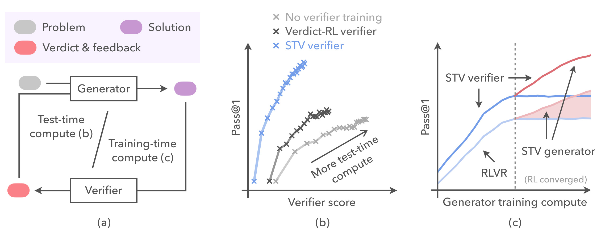
Figure 1 把论文的两条主线压在一张图里。左侧面板是 V-R 循环：problem 进入 generator 得到 solution，verifier 返回 verdict 与 feedback，反馈再回到 generator 形成下一轮 refinement。中间面板画的是测试时计算扩展，横轴可理解为 verifier score 或多轮验证带来的计算投入，蓝色 STV verifier 曲线明显比未训练 verifier 和 verdict-RL verifier 更能把额外计算转成 pass@1。右侧面板画的是训练时 compute：在 RLVR 收敛后继续把 verifier feedback 放入 generator 训练，得到 STV generator，阴影区域表示即使测试时不使用 verifier，生成器自身的 round-0 能力也上移。这个图的重点不是展示精确数值，而是说明论文把“学会验证”和“用验证训练生成器”放进同一个自我改进闭环：更好的 verifier 先让测试时循环更可靠，再反过来提供更丰富的训练上下文。
2.1 V-R问题设定：生成器先答，验证器带反馈地拒绝或接受
论文从一个标准 reasoning problem 开始，记作 x，对应 ground-truth answer 是 y^{\star}(x)。系统包含 generator G 和 verifier V。它们可以是两个独立模型，也可以是同一个模型在不同 prompt 下扮演不同角色；论文主实验里用 Qwen3-8B 作为基础模型，并在不同实验里区分生成器和验证器的训练状态。第 0 轮生成器先给出初始解答：
符号解释：x 是输入题目，G 是生成器，y_0 是初始 solution。这个公式本身很普通，但它规定了后续所有收益的起点：如果只看 round 0，那就是普通 pass@1；如果允许 verifier 介入，后面的 y_r 才能体现测试时 self-improvement。
从第 r 轮开始，verifier 观察上一轮解答 y_{r-1}，输出一个 verdict 和一段 feedback：
符号解释：v_r 是第 r 轮 verifier 的判定，取 accept 或 reject；f_r 是自然语言反馈；V 是 verifier 的条件分布；y_{r-1} 是上一轮候选解。这个接口把 verifier 的职责拆成两部分：verdict 决定循环是否接受当前解，feedback 决定如果拒绝，下一轮 generator 能从哪里修。论文反复强调，final-answer label 主要能训练 verdict，但不足以训练 feedback，因为“哪里错”不是最终答案标签直接包含的信息。
如果 verifier 拒绝，generator 会把上一轮解答和反馈一起作为条件，生成新的候选：
符号解释：y_r 是第 r 轮修改后的 solution，条件里除了原题 x，还包括上一轮解 y_{r-1} 和反馈 f_r。这个公式说明 V-R 循环和 Best-of-N 的核心差别：Best-of-N 是并行采样多个 y_0 再选一个，而 V-R 是让 f_r 改变下一轮生成条件。若 feedback 只是泛泛而谈，G 实际上仍接近重新采样；若 feedback 指出具体逻辑错误，G 才可能沿着新的局部修正路径移动。
循环在第一次 accept 时结束，或者在达到最大轮数 R 后结束。实验里作者使用最多 20 轮 V-R，并对每个 test problem 跑 32 条独立循环。这个设定让论文能够观察两个现象：一是 pass@1 是否会随 verification round 增加，二是 verifier score、acceptance precision 和 pass@k 是否会出现 reward hacking 或多样性损失。如果只看一两轮，很难判断 STV 是否真正改善了 test-time scaling。
2.2 STV的参考解条件教师：把难以直接监督的反馈质量变成模仿目标
STV 的核心不是让模型自己凭空批改自己，而是利用训练数据里可获得的 reference solution。作者的假设很朴素：同一个模型在不给参考解时难以定位错误，但给它参考解之后，它能更容易比较 candidate solution 与 reference solution 的差异。于是训练时构造一个 teacher verifier：
符号解释：V^{\star} 是 reference-conditioned teacher verifier；x 是题目；y_{r-1} 是生成器上一轮的候选解；y^{\star}(x) 是参考解或标准答案对应的解题路径。星号不表示更大模型，而表示“同一基础模型在额外看到 reference solution 后形成的更知情分布”。这点很关键：STV 的老师不是外部强模型，也不是人工批改者，而是给同一个模型临时提供 privileged information。
训练目标是让 student verifier V_{\theta} 在测试时没有参考解的情况下，尽量模仿这个更知情 teacher 的 verdict 与 feedback 分布。这里的“模仿”不是只学 teacher 的最终 accept/reject，更是学 teacher 怎样描述错误。比如对于一个错误数学解，teacher 看到参考解后可能指出学生漏掉了某种 parity case，或把极限误认为前若干项平均值，或把几何点错误放在三角形边上。student 在测试时不能看到 reference，但通过大量这种对比式监督，可以学到哪些失败模式常见、怎样把错误定位写成生成器能用的反馈。
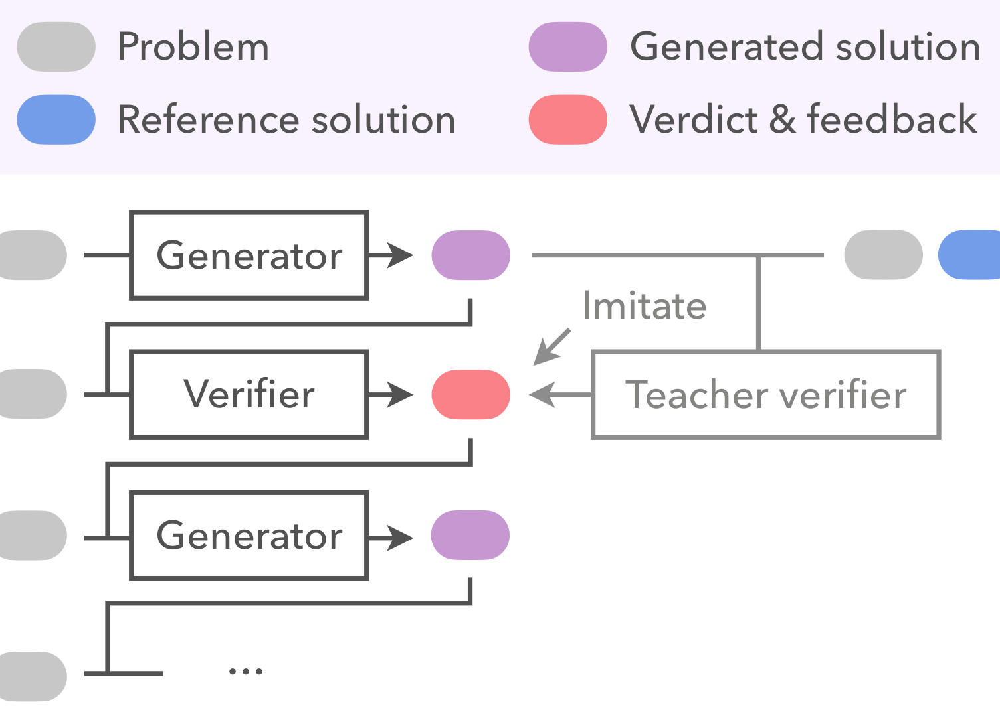
Figure 2 展示了 STV 的教师-学生结构。上方是 problem、reference solution、generated solution 以及 verdict & feedback 的图例；中间的 teacher verifier 同时看到候选解和参考解，因此能够生成更可靠的反馈；左侧的 ordinary verifier 只看到 problem 和 generated solution，它通过 imitation 学 teacher 的输出分布。图里多轮 generator 的省略号也很重要，说明训练样本不是固定来自一个静态答案集合，而是来自 generator rollouts 的中间状态。这样 student 学到的是 on-policy 情境下的反馈，而不是只在 teacher 自己写出的理想序列上做离线模仿。
从训练数据角度看，STV 需要三个东西：题目 x，参考解 y^{\star}(x)，以及生成器在训练题上的 candidate solution y_{r-1}。candidate solution 不是随便选的负样本，而是模型自己在 rollout 中真的可能生成的答案。这个选择减少了训练-测试 mismatch：测试时 verifier 面对的也是同一类 generator 产物，而不是人工构造的错误。reference-conditioned teacher 在这些真实产物上给出 verdict 和 feedback，student 再在不看 reference 的条件下学习 teacher 的分布。
这里最容易误解的是“给 reference solution 是否等于把答案泄漏给模型”。STV 的泄漏只发生在训练 teacher 时；student verifier 在测试时没有 reference，也不直接生成最终答案，而是输出 verdict 与 feedback。论文后面的 oracle 消融正是为了证明，单纯把 oracle 信息用在 generator prefix-conditioning 并不能替代 STV teacher。参考解在 STV 中的作用更像训练时的脚手架：它让模型在批改阶段看到“正确解法是什么样”，从而学习如何描述偏离点；脚手架撤掉后，student 仍然要在无参考测试题上工作。
2.3 On-policy distillation与verdict-RL：同时训练反馈分布和判错准确性
有了 teacher verifier 之后，最直接的方法是 SFT：从 V^{\star} 采样 verdict 和 feedback，把这些序列作为 supervised targets 训练 V_{\theta}。论文确实把 SFT 作为 baseline，但结果显示它在作者的模型和数据设置里失败了。作者给出的解释是 off-policy mismatch：SFT 训练 student 复现 teacher 产出的完整序列，但测试时 student 会生成自己的 prefix；一旦 prefix 偏离 teacher 轨迹，后续 token 条件分布就落在训练没覆盖的区域。对于长 feedback 来说，这种偏离会不断扩大，最后 student 可能学到表面风格，却没有学到在自己真实输出状态下怎样继续诊断。
为了解决这个问题，作者使用 on-policy distillation。OPD 不是只在 teacher 序列上做最大似然，而是在 student 自己的输出分布附近比较 student 与 teacher 的 full response sequence 分布。论文把学生输出记作 z=(v_r,f_r)，并用 α-divergence 做分布匹配：
符号解释：\mathcal{L}_{\mathrm{OPD}} 是 on-policy distillation loss；\theta 是 student verifier 参数；(x,y_{r-1}) 来自 generator 在训练 prompts 上的 rollouts；D_{\alpha} 是 α-divergence，论文使用 α=0.5，也就是接近 Jensen-Shannon 的对称分布差异；V_{\theta} 是无参考 student verifier；V^{\star} 是有参考 teacher verifier。这个公式的直觉是：让 student 在它自己会访问的 response 区域里，尽量靠近 teacher 的诊断分布，而不是只背 teacher 的离线文本。
OPD 训练的是反馈质量，但 verifier 还必须会做 verdict。一个 feedback 写得像回事但 verdict 经常 accept 错误答案，V-R 循环仍然会提前停止；反过来，一个 verdict 准确但 feedback 泛泛的 verifier，会把训练信号压缩成二元标签，难以指导 generator refinement。因此作者增加了 verdict-RL 组件，用 correctness indicator 作为 reward 信号，使 v_r 和 y_{r-1} 是否正确保持一致。论文中的描述可以写成：
符号解释：r_{\mathrm{verdict}} 是用于训练 verdict 的奖励；外层 \mathbb{I} 表示判定是否匹配；内层 \mathbb{I}[y_{r-1}=y^{\star}(x)] 表示候选解是否真的正确。严格说，accept/reject 在实现里需要映射到正确/错误标签，公式表达的是“verdict 必须和候选解的真实正确性一致”。它只覆盖“该不该接受”，不直接覆盖“怎样反馈”，所以需要和 OPD 联合使用。
完整 STV objective 是两部分相加：
符号解释：\mathcal{L}_{\mathrm{STV}} 是 student verifier 的总目标；\mathcal{L}_{\mathrm{OPD}} 对齐 teacher feedback 分布；\mathcal{L}_{\mathrm{RL}} 提升 verdict correctness；\lambda 控制 verdict-RL 项权重。这个设计体现了论文对 verifier 的双重要求：它既要能拒绝错误答案，又要能给出足够具体的自然语言诊断。只优化 \mathcal{L}_{\mathrm{RL}} 会接近 verdict-only verifier，实验中收益很有限；只做 SFT 又会受 off-policy mismatch 影响；STV 的组合目标才在多轮 V-R 中稳定扩展。
从工程实现角度，这里还有一个隐含约束：teacher 和 student 使用同一模型族或同一基础模型的不同 prompt / conditioning。这样做降低了对外部强模型的依赖，但也意味着 teacher 的上限不是无限的。teacher 之所以强，是因为它拿到了 reference solution，而不是因为参数规模更大。因此 STV 最适合那些“训练时有参考、测试时没有参考；给参考后诊断容易，不给参考时诊断困难”的任务。数学、科学推理、代码修复、复杂规划都可能有这种结构；开放式偏好写作则未必，因为 reference 本身不唯一，teacher feedback 的监督目标可能更难定义。
2.4 ViL：冻结STV验证器，把多轮反馈放进生成器RL训练
STV 训练好 verifier 后，论文没有停在测试时 V-R，而是继续问：如果 verifier feedback 真的有诊断性，能不能用它训练 generator，使 generator 本身变强？这就是 verifier-in-the-loop training。ViL 的做法是把一个 frozen STV verifier 放进 generator 的 RL episode。每个 episode 中，generator 先独立答题，然后 verifier 根据答案给 verdict 和 feedback，generator 再基于反馈改写；最终 reward 仍然来自可验证的正确性，而不是 verifier 的主观偏好。可以把这一过程写成：
符号解释：G 是被训练的 generator；V_{\theta} 是已经训练好并冻结的 STV verifier；y_0 是无反馈初始答案；(v_1,f_1) 是第一轮验证器输出；y_1 是接受反馈后的修正版；R 是 episode 结束时依据最终答案正确性得到的可验证 reward。这里 verifier 不直接变成 reward model，也不更新参数；它提供的是中间自然语言上下文，让 generator 在 RL 中学会如何利用诊断反馈最大化最终正确率。
ViL 的一个有趣之处在于，它理论上不一定会提升 round-0 能力。generator 完全可以学成“第一轮随便答，后面等 verifier 指出错误再改”，这样最终轮 pass@1 变高，但单独拿走 verifier 后 round-0 不变。论文实验发现相反：从已经 RLVR 收敛的 generator 出发，ViL 不仅提升 final-round V-R performance，还提升了无 verifier 的 standalone pass@1。作者把这称为 training-time self-improvement，意思是 feedback loop 中学到的诊断模式内化成了 generator 第一轮解题能力。
这一点让 ViL 和普通 self-training 区分开。普通 self-training 往往把“模型自己生成、验证通过”的样本加入训练，如果验证器弱，错误样本会污染数据；如果只保留正确答案，反馈仍然稀疏。ViL 中 verifier feedback 不承担最终 reward 的真实性来源，最终 reward 仍然由 y_R 是否等于 y^{\star}(x) 决定；feedback 只是帮助 generator 找到更有希望的修正轨迹。换句话说，ViL 没有把 unverifiable feedback 当作 reward，而是把 feedback 当作状态信息或辅助上下文，这比直接用 verifier 分数优化 generator 更稳。
ViL 也提出一个训练循环的长期想象：更好的 verifier 能训练更好的 generator；更好的 generator 会产生更难、更接近边界的错误答案；这些错误答案又能用于训练下一代 verifier。论文没有真正跑多代循环，但 Figure 1 和结论都暗示了这种可能性。真正难点在于数据分布会移动：当 generator 变强后，错误更隐蔽，reference-conditioned teacher 是否还能稳定生成高质量 feedback；verifier 是否会过拟合训练题型；多代循环是否会出现 feedback 风格僵化或 reward hacking。这些都不是 STV 一次实验能解决的问题，但 ViL 至少给出了一条把 verifier 从 inference utility 转成 training signal provider 的路径。
2.5 三条训练轨道：把验证器增益和生成器增益分开读
论文实验设计里有三条生成器轨道。第一条是 base Qwen3-8B generator，主要用于观察 verifier training 对固定生成器的测试时增益。第二条是 continual-trained generator，也就是先用 RLVR 在训练集上训练到收敛，再比较自验证、meta-verifier、STV verifier 等不同验证器是否还能提供额外提升。第三条是 STV generator，它从 RLVR-converged checkpoint 出发，通过 ViL 继续训练生成器。这个设计避免了一个常见混淆：如果只看到最后模型更强，不知道是 generator 变强、verifier 变强，还是两者同时变化。
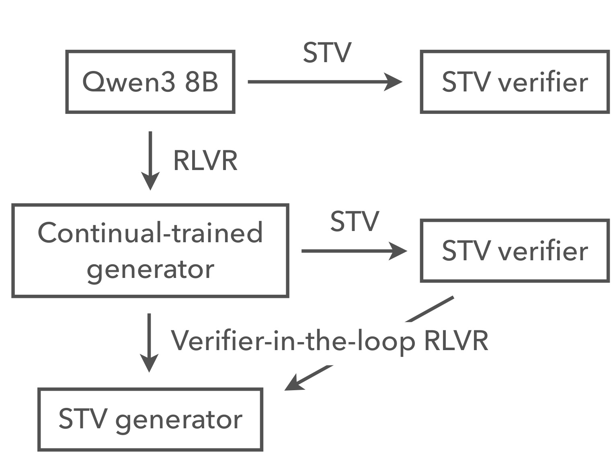
Figure 3 的上、中、下三行分别对应这三条轨道。上行是 Qwen3 8B 经过 STV 得到 STV verifier，用来服务基础生成器；中行是 Qwen3 8B 先经过 RLVR 得到 continual-trained generator，再对其验证器做 STV；下行是在已经有 STV verifier 的基础上做 Verifier-in-the-loop RLVR，得到 STV generator。图中每个箭头都在提醒读者：STV verifier 和 STV generator 是不同产物，前者是验证器训练，后者是生成器训练。后文 Figure 4/5/6 主要读 verifier 的作用，Figure 7/Table 2 则主要读 ViL 对 generator 的作用。
数据上，作者使用 DAPO hard math problems，并按 Qwen3-8B 的 pass@1 分成 Hard 和 Hardest：Hard 是 0 < pass@1 < 0.2，Hardest 是 pass@1 = 0。这个分桶非常关键，因为 STV 的目标不是让模型在容易题上锦上添花，而是看它能否在 base generator 第一轮几乎解不出的题上通过验证和反馈累积收益。为了减轻训练测试泄漏，作者用 OpenAI text-embedding-3-large 计算训练题与测试题的 embedding similarity，去除与训练题 cosine similarity 超过 0.8 的测试题，最后每个 test bin 约 150 道题。每题 32 条独立 V-R loops、最多 20 轮，让结果既能看均值也能看轮次趋势。
基线也围绕 verifier bottleneck 设计。No verifier training 表示未训练验证器，Verdict-RL verifier 只强化 verdict accuracy，SFT verifier 学 teacher traces 但不解决 on-policy mismatch，Meta-verifier RL verifier 则近似 Shao et al. 的路线，用额外模型评估反馈质量；论文中由于无法访问原 meta-verifier，使用 GPT-5.2 作为 proxy。这个基线组很有信息量：如果 verdict-RL 足够，说明 feedback 质量不重要；如果 SFT 足够，说明简单蒸馏就行；如果 meta-verifier proxy 足够，说明外部反馈评分能替代 reference-conditioned teacher。实验显示这些替代方案都没有 STV 稳定。
在这套方法里，公式并不多，但每个公式都对应一个可复现接口。V-R 公式定义训练和测试数据长什么样；teacher 公式定义 reference solution 怎样进入监督；OPD 公式说明为什么要在 student 分布附近做蒸馏；STV objective 把反馈学习和 verdict learning 合并；ViL rollout 公式则说明 verifier feedback 在 generator RL 中是上下文而非最终 reward。理解这些接口，比记住“STV 提升 2 倍或 14 倍”更重要，因为真正可迁移的是：当某个任务拥有训练时可用、测试时不可用的 reference signal，可以尝试把“带 reference 的自我诊断”蒸馏给“无 reference 的验证器”。
3. 实验结果
3.1 基础生成器：STV让测试时V-R真正随轮次扩展
基础生成器实验固定 Qwen3-8B generator，只替换 verifier。作者比较 No verifier training、Verdict-RL verifier、Meta-verifier RL verifier、SFT verifier、STV verifier，以及一个不带验证的 4 倍规模 Qwen3-32B generator。核心结果是：未训练或只训练 verdict 的 verifier 很快饱和，SFT 也没有明显收益；STV verifier 的 pass@1 随 verification round 增长，在 final round 达到 Hardest 5.5%、Hard 27.4%。更重要的是，STV-guided 8B 在这些 hard bins 上超过了不带 verification 的 Qwen3-32B：后者是 Hardest 2.7%、Hard 17.8%。这说明在这些困难题上，训练过的验证器能提供不同于单纯扩大生成器规模的收益。
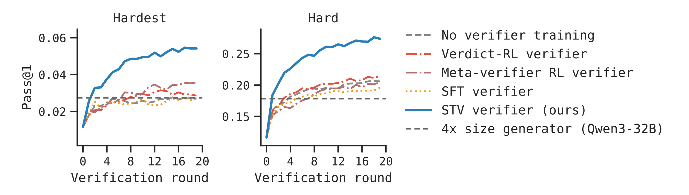
Figure 4 左边是 Hardest，右边是 Hard。蓝色 STV verifier 曲线在两个分桶里都持续上升，并且和其他 verifier 曲线的间隔随轮次扩大；灰色 No verifier training 在 Hardest 上很快停在较低水平，Hard 上也接近水平线；红色 Verdict-RL 和棕色 meta-verifier proxy 有小幅上升但不形成同样的长期扩展；黄色 SFT 也没有解决问题。读这张图时要注意纵轴绝对值：Hardest 从 0 pass@1 的题型筛出来，即使 5.5% 看起来小，也是在 base generator 原本第一轮无法解出的题上通过多轮诊断得到的最终收益。图中的 4x size generator 横线提供了另一个解释：不是所有 test-time compute 都等价，STV 的反馈循环能把 8B 的多轮推理推到超过更大但无验证的 generator。
3.2 更强生成器和科学推理：增益没有被RLVR吸收
作者接着问，如果生成器已经经过 RLVR 训练并收敛，STV 是否还有效。这个实验很重要，因为如果 STV 的收益只是弥补 base generator 太弱，那当 generator 变强后，verification refinement 可能失去作用。Figure 5 显示，continual-trained generator 的起点已经高于 base generator，Hardest 和 Hard 的 round-0 pass@1 分别约 10.8% 和 37.2%；它自身 self-verification 也稍好于 base verifier。但 STV verifier 仍能在多轮 V-R 中带来额外提升，说明验证器训练没有被生成器的 RLVR 完全吸收。
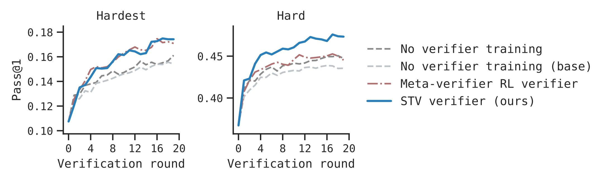
Figure 5 的读法和 Figure 4 类似，但基线已经不是弱的 base generator。蓝色 STV verifier 曲线在 Hardest 和 Hard 上依然位于最高或接近最高位置，尤其在 Hard 上与 self-verification 的间隔很清楚。灰色的 No verifier training (base) 与 No verifier training 区分了“用基础模型当验证器”和“用持续训练后的生成器自验证”的差别；后者略强，但不足以达到 STV。这个结果支持一个实际判断：即便团队已经通过 RLVR 把 generator 训练到阶段性 plateau，继续训练 verifier 仍然可能是更高性价比的路线，而不是只把所有 compute 都投到 generator 上。
科学推理实验使用 SciKnowEval，覆盖 chemistry、biology、physics、materials science 等多领域题目，并按 Qwen3-8B pass@1 同样划分 Hardest 和 Hard。Table 1 给出的结果很醒目：No verification 在 Hardest 上是 1.5%，No verifier training 是 2.1%，几乎没有提升；STV verifier 达到 21.0%。在 Hard 上，No verification 是 11.5%，No verifier training 是 11.4%，STV verifier 是 42.4%。作者还放入 4× model size 和 30× model size 两个不带验证的大模型基线，STV-guided 8B 在两个分桶上都超过它们。
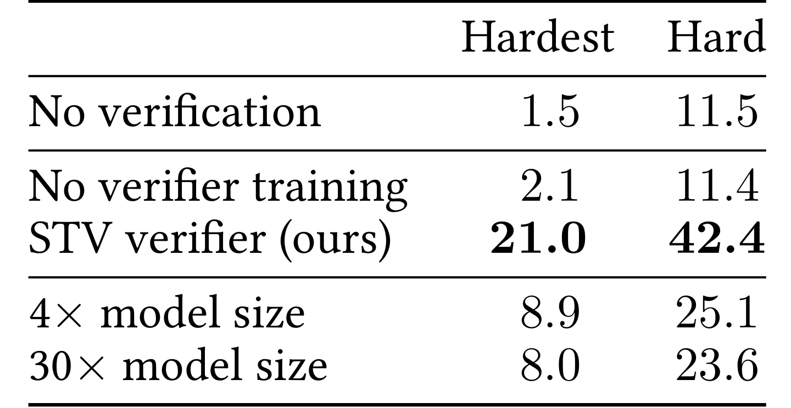
Table 1 证明 STV 不是只在数学题的特定格式上有效。Hardest 列中，STV verifier 从 1.5 提升到 21.0，论文摘要称为 14×；Hard 列中，从 11.5 提升到 42.4，接近 4×。更值得注意的是大模型对照：4× model size 是 8.9 / 25.1，30× model size 是 8.0 / 23.6，都低于 STV verifier。这里不能简单解读成“验证器永远优于扩大模型”，因为模型、数据和预算都有限；但它说明在困难科学推理题上，瓶颈确实可能不是参数规模本身，而是模型是否能在多轮中得到可执行的诊断信号。表格也提醒我们，无训练的自验证甚至可能不如不验证，因为多轮错误反馈会消耗 compute 但不增加可靠性。
3.3 弱到强验证：小验证器也能学到可迁移的诊断能力
弱到强实验考察一个工程问题：如果 verifier 每轮都要调用，能不能用小 verifier 降低测试时成本。作者在 8B generator 上比较 8B、4B、1.7B verifier 训练前后的效果。未训练时，4B 和 1.7B verifier 都不比 8B self-verification 更好；STV 训练后，4B verifier 接近 8B STV，final pass@1 约 26.4% vs 27.4%；1.7B verifier 也能匹配或接近未训练 8B verifier，约 21.7% vs 20.6%。
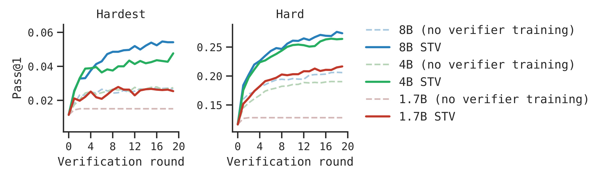
Figure 6 的右侧图例区分了每个 verifier size 的训练前后版本。蓝色 8B STV 是最强曲线，绿色 4B STV 在 Hard 上几乎贴近 8B STV，Hardest 上也明显超过未训练 4B；红色 1.7B STV 虽然没有达到 4B/8B STV，但远高于未训练 1.7B。这个结果的含义是，STV 学到的不是单纯依赖大模型规模的“会写批改语气”，而是可被较小 verifier 吸收的诊断行为。落到系统设计中，如果 generator 很大、verifier 调用频繁，训练一个较小但专门化的 verifier 可能比每轮都调用同等规模模型更经济。它也提示后续系统可以把 generator scale 和 verifier scale 解耦：生成器负责保留复杂推理能力，验证器则用更小参数专门学习错误定位和反馈表达，从而把测试时成本压到可部署范围。
3.4 ViL训练：反馈循环能转化成生成器自身能力
ViL 实验从已经 RLVR 收敛的 generator 出发，冻结 STV verifier，继续用 verifier-in-the-loop RLVR 训练 generator。作者报告最显著的现象是 round 0 也提升：Hardest 从 10.7% 到 14.7%，相对 +37%；Hard 从 36.7% 到 47.7%，相对 +30%。这不是多轮 V-R 的直接收益，因为 round 0 没有 verifier 介入；它说明 generator 在训练时接触到 diagnostic feedback 后，某些修正能力内化到了第一轮解题。final round 也提升，Hardest 上 round 20 达到 27.3%，而同样额外 compute 用于继续标准 RLVR 的 RLVR-only (longer) 只有 16.1%。
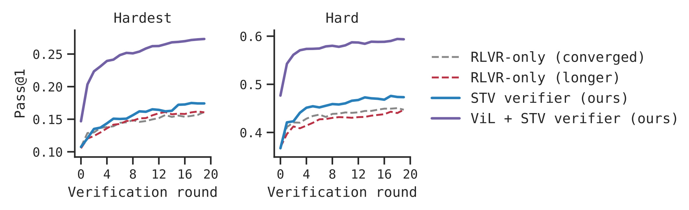
Figure 7 的紫色 ViL + STV verifier 曲线在两个分桶里都明显高于蓝色 STV verifier 和两条 RLVR baseline。Hardest 面板中，紫色曲线从 round 0 就高出一截，并在早期快速拉开；Hard 面板中，紫色曲线的 round-0 起点已经接近 0.48，之后多轮还继续上升。红色 RLVR-only (longer) 与灰色 RLVR-only (converged) 接近，说明同样训练步数继续做标准 RLVR 没有带来可比收益。这个图支撑了论文最有意思的结论：训练时把 verifier feedback 放进 generator 的状态，不只是让 generator 更会“听批改”，还可能改变它第一轮构造解法的能力。
oracle 消融进一步拆解 reference solution 的使用方式。Table 2 比较四种设置：不使用 oracle 的 RLVR-only (converged)、ViL + self-verify；使用 oracle 的 prefix-conditioning、ViL + STV verifier。Prefix-conditioning 把参考解前 50% 作为生成器训练前缀，属于另一种利用 oracle 的方法；ViL + self-verify 则没有 reference-conditioned STV verifier，而是让 generator 自己提供反馈。结果显示，ViL + STV verifier 在 round 0 和 round 20 都最好，分别为 31.2 和 43.3；ViL + self-verify 是 29.8 和 39.4；prefix-conditioning 是 29.1 和 38.5。
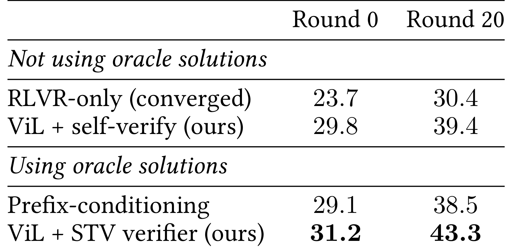
Table 2 的关键不是只看最高数字，而是看 oracle 信息放在哪里最有效。Prefix-conditioning 直接把参考解片段放进 generator training，却不如把 reference solution 用来训练 teacher verifier 再经由 feedback 进入 ViL。ViL + self-verify 完全不使用 oracle，也能超过 prefix-conditioning，说明“训练时处在反馈循环中”本身就有价值；但到 round 20，ViL + STV verifier 比 self-verify 高约 4 点，说明训练过的 verifier feedback 在多轮中仍然会复利。这个表格也缓解了一个担忧：STV 的增益不是简单因为训练时看过 oracle 答案，而是因为 oracle 被转化成了诊断反馈的 teacher signal。
3.5 为什么STV有效：校准、反馈质量和输出分布
作者用 Figure 8 诊断 verifier score 和真实正确率之间的关系。左图是 pass@1 vs verifier score over rounds，右图是 precision-coverage frontier。未训练 verifier 的典型问题是 score 增长但 accuracy 不增长，说明模型可能越来越会说服自己；STV verifier 则让 precision 随 coverage 提升，并在相同 coverage 下有约 3 到 5 倍更高 precision。也就是说，多轮验证不是只增加接受数量，而是让被接受的答案更可能正确。
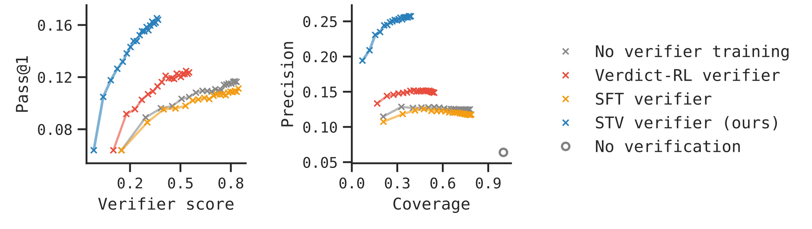
Figure 8 左侧蓝色 STV 曲线随着 verifier score 增加，pass@1 同步上升；灰色、红色、黄色基线则在较低区域聚集，体现 score 与 correctness 的脱钩。右侧 precision-coverage 中，STV 的蓝色点处于明显更高的 precision 区域，并且 coverage 增加时 precision 不崩。这张图给 Figure 4/5 的轮次曲线提供机制解释：STV 能扩展测试时 compute，是因为它改善了“什么时候接受”的校准，而不是让模型无限循环到某个高分幻觉状态。对实际系统来说，precision-coverage 比单点 accuracy 更重要，因为线上服务常常需要在覆盖率、延迟和接受阈值之间做权衡。
为了隔离 feedback 本身的价值，作者又做了一个 ground-truth verdict 实验：把 verifier 的 verdict 替换成真实 correctness label，只改变 feedback。GT verdict only 使用无信息反馈“Your solution appears to be incorrect.”作为基线；GT verdict + untrained feedback 使用未训练 Qwen3-8B 的反馈；GT verdict + STV feedback 使用 STV verifier 的反馈。结果在 Hard final round 上，untrained feedback 比 GT verdict only 多 +5.2%，STV feedback 又在此基础上多 +3.2%。这说明即便 verdict 已经正确，feedback 的具体内容仍然重要。
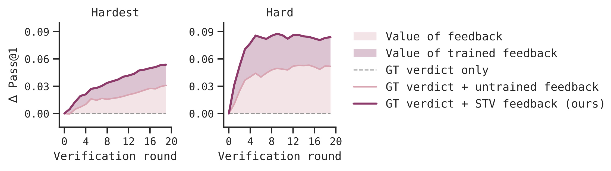
Figure 9 的纵轴是相对 GT verdict only 的 Δ Pass@1，淡粉色区域表示普通反馈价值，深色区域表示训练过反馈的额外价值。Hardest 和 Hard 两个面板中，STV feedback 曲线都在 untrained feedback 之上，尤其 Hard 面板前几轮增长很快。这个结果很适合解释 STV 与 verdict-RL 的差别：verdict-RL 可以告诉 generator “错了”，但不知道怎样指出错因；STV feedback 在 reference-conditioned teacher 的帮助下学会了更具体的诊断，因此即使不让它决定 accept/reject，也能提高 refinement 质量。
最后，作者检查 V-R 是否只是压低输出多样性。Figure 10 看 pass@k 随 k 和 verification round 的变化。若 verification 只是把分布收缩到少数模式，pass@1 可能升高但 pass@k 会下降；图中 strongest setting 下前 10 轮 pass@k 一般上升，说明 V-R 不只是削掉多样性。与此同时，pass@k 随轮数存在甜点，特别是在较高 k 时会在非零轮数达到峰值，之后可能平或略降；Hardest 题通常需要更多轮才到峰值。
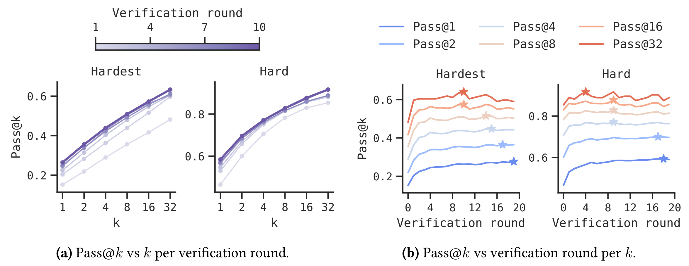
Figure 10 左侧的 (a) 面板固定不同 verification round，看 pass@k 随 k 增加；颜色越深表示轮数越多，前 10 轮整体把曲线抬高。右侧 (b) 面板固定不同 k，看 pass@k 随轮数变化，星号标出峰值位置。它提醒我们，测试时 compute 不是越多越好：早期反馈能帮助模型探索并修正，过多轮则可能出现过度收敛或反馈噪声累积。对部署而言，这意味着需要按题目难度、目标 k、延迟预算选择 round，而不是机械设置最大轮数。
Figure 11 直接比较 V-R refinement 与 Best-of-N resampling。在 matched compute 下，N 个独立样本的 BoN 与 r 轮 refinement 对齐为 N=r+1。结果显示，在 base generator 和 STV generator 上，V-R w/ STV 优于 BoN w/ STV，说明结构化改写优于单纯重采样；continual-trained generator 是例外，作者解释为它只被训练 round-0 accuracy，没有学会使用 feedback，所以 reshape 路径不可用，只剩 sharpening。STV verifier 对 V-R 和 BoN 都有帮助，说明它作为 verifier 本身也更强。
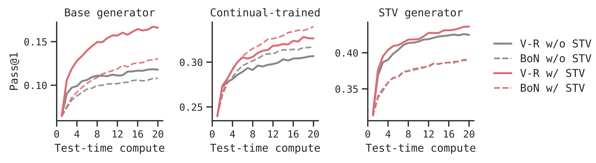
Figure 11 有三个面板：Base generator、Continual-trained、STV generator。红色实线是 V-R w/ STV，红色虚线是 BoN w/ STV；灰色是没有 STV 的对应版本。Base 和 STV generator 面板里，红色实线在多数 compute 范围内高于虚线，表示同样额外计算用于“带反馈地改写”比用于“多采样再挑选”更有效。Continual-trained 面板里 BoN w/ STV 反而更强，说明一个只为 round-0 强化过的 generator 未必会自然利用 feedback。这个结果给 ViL 的必要性提供了反向证据：如果想让 V-R 真正重塑分布，generator 也需要在反馈循环中训练，而不只是测试时临时接收批改。
3.6 定性反馈：STV更像在定位错因，而不是只给拒绝标签
附录 A 给出了一组定性例子，虽然没有截图进入正文，但对理解方法很有帮助。作者比较未训练 Qwen3-8B verifier 和 STV verifier 在同一错误生成答案上的反馈。未训练 verifier 有时直接把错误答案判为 CORRECT，例如把三元组计数题的错误答案 14 接受为正确，或把递推极限题中“极限等于前 2020 项平均值”的错误推理接受为正确；STV verifier 则拒绝并指出 parity casework、递推平均过程、几何构型假设等具体问题。更微妙的是，有些例子里两个 verifier 都给 INCORRECT verdict，但未训练 verifier 的自然语言反馈会自相矛盾，先说错误再把错误答案重新说成正确；STV feedback 虽然也不完美，但更稳定地指向缺失的逻辑步骤。
这些例子说明，STV 关注的 feedback quality 不是润色，而是让反馈承载可执行信息。如果 generator 收到“你的答案错了”，它可能只能重新生成；如果收到“你假设了外拿破仑三角形等边，但这个构型需要坐标几何分析”，它就有机会沿新路径修。定性例子也解释为什么 Table 2 中 self-verify 不如 STV verifier：模型自己的反馈可能偶尔有用，但参考解条件 teacher 让反馈更集中在真实错因上，长期多轮时这种差异会累积。
整体看，实验链条比较完整：Figure 4/5 证明测试时 V-R 提升；Table 1 证明跨到科学推理；Figure 6 证明小 verifier 有机会降低成本；Figure 7/Table 2 证明 ViL 让 generator 本身变强；Figure 8/9 解释校准和反馈质量；Figure 10/11 说明不是简单牺牲多样性或重采样筛选。仍需保留的谨慎点是，所有主要实验围绕 Qwen3 系列、DAPO/SciKnowEval hard splits 和作者选定的训练流程展开；STV 的一般性还需要在代码、开放式证明、工具调用、多参考答案或非唯一答案任务上进一步验证。
4. 总结
4.1 我的判断
这篇论文的价值在于把“验证器很重要”推进到一个可训练的监督构造：不是让模型凭空自我批改，也不是依赖人工反馈质量标签，而是利用 reference solution 造成的能力不对称，把更知情的自己蒸馏给无参考的自己。这个设定很适合 hard reasoning，因为困难题的错误通常不是最终答案一眼能看出，而是中间推理链条里某个条件错用。STV 的实验证据也比较连贯：测试时能扩展，训练时能通过 ViL 转化到 generator round-0 能力，机制上又有校准、feedback value 和 V-R vs BoN 的支撑。
4.2 工程启发与复现建议
如果要复现或迁移，第一步不应急着改模型结构，而应先确认任务是否具备 STV 所需的不对称性：训练时是否有可靠 reference，reference 是否能帮助模型定位候选解错误，测试时是否不能或不应直接暴露 reference。第二步要构造 on-policy candidate pool，因为 verifier 最终面对的是 generator 自己的错误分布；若只用人工负样本或 teacher 生成文本，可能重现 SFT 的 off-policy 问题。第三步要把 verdict accuracy 和 feedback quality 分开评估，至少同时看 final answer correctness、acceptance precision、feedback 消融和多轮曲线。第四步，如果要做 ViL，必须冻结 verifier 并保持最终 reward 可验证，避免把 verifier 的主观分数直接变成 generator reward 后引入 reward hacking。
4.3 局限与后续跟进
局限至少有四点。第一，teacher 虽然不依赖外部更强模型，但仍依赖 reference solution；没有标准参考、答案多样或开放式任务上，teacher target 会变得模糊。第二，论文主要围绕数学和科学推理，代码、交互式工具、长程规划以及多模态推理还没有验证，feedback 的可执行性可能需要不同格式。第三，ViL 的长期多代循环没有跑，当前只展示一次 verifier-in-the-loop training，无法判断多代自我改进是否稳定或是否会反馈风格坍缩。第四，实验使用同一训练问题给 verifier 和 generator 训练，虽然测试题做了 embedding 去重，但数据选择、题型重叠和 hard split 稳定性仍值得复核。第五，作者报告 code/project 状态本次未核验，复现前还需要确认训练脚本、数据划分、模型 checkpoint 和评估命令是否完整公开。
后续我会优先跟三类问题。第一，STV 能否迁移到代码修复或证明补全，因为这些任务也有 reference solution、test cases 或 proof checker，但 feedback 格式更接近可执行 patch。第二，reference-conditioned teacher 的质量如何自动审计，例如 teacher 是否只是复述 reference，还是确实比较了 candidate 与 reference 的差异。第三，ViL 的 compute 分配问题：给 generator RLVR、verifier STV、test-time rounds 各多少预算最划算，是否可以根据题目难度动态选择 verifier size 和 round 数。若这些问题得到解决，STV 的意义会从一篇 reasoning benchmark 论文，扩展为一种训练可诊断验证器的通用 recipe。